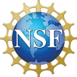
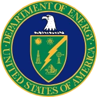
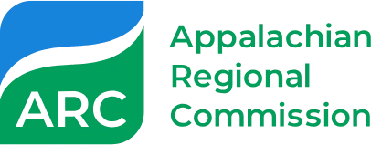

NSF · AISL · #2618127$749,874
PATENT's research is supported by federal agencies, state programs, industry partners, and a founding endowment. Here are our current awards and the sponsors behind our work.

NSF · AISL · #2618127PATENT was built on endowment-level support from Mississippi State alumnus Lamar McKay, retired Deputy Chief Executive of BP, and Nancy McKay, announced in 2022. UA News reported it as a $5.5 million endowment.
The McKay Predictive Analytics and Technology Integration Laboratory Excellence Endowment supports infrastructure, personnel, and travel. A companion excellence fund provides annual support while the endowment matures.
Since its founding, PATENT's research at Mississippi State and Alabama has been supported by:

DOEU.S. Department of Energy
ARCAppalachian Regional CommissionThis material is based upon work supported by the U.S. National Science Foundation under Grant Nos. 2618127, 2611682, 2613873, 2246920, 2133190, and 2234515. Any opinions, findings, and conclusions or recommendations expressed in this material are those of the authors and do not necessarily reflect the views of the National Science Foundation. Agency names and logos identify sources of research funding; their use does not imply endorsement by any agency.
We work with agencies, foundations, and industry on applied AI for security, health, and autonomy. Let's talk about a project, a sponsored student, or a gift.